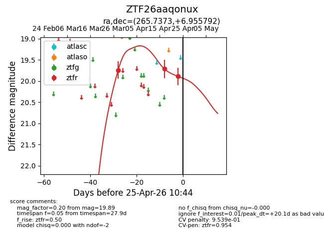
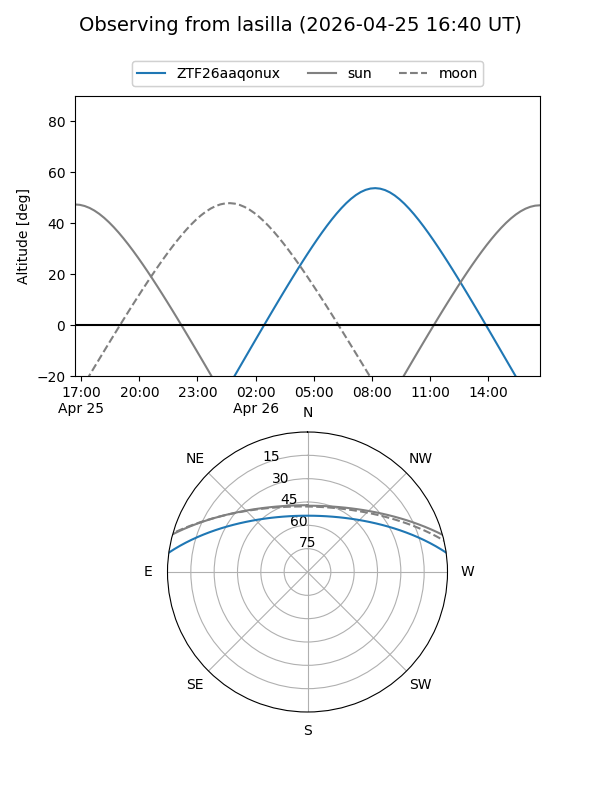
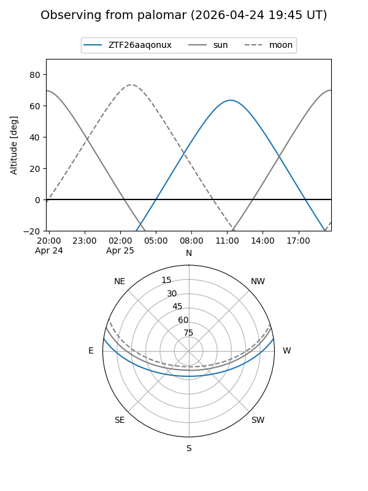
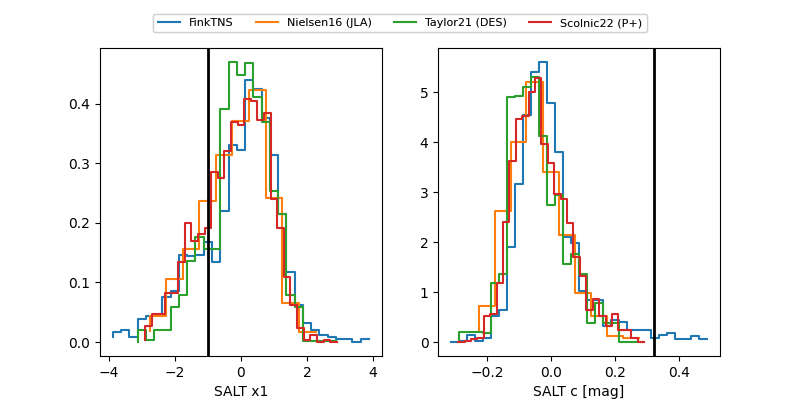

ZTF26aaqonux
Target ZTF26aaqonux at 2026-04-25 10:46
Aliases and brokers:
FINK: link
Lasair: link
ALeRCE: link
alt names
ZTF26aaqonux (ztf,fink_ztf)
Coordinates:
equatorial (ra, dec) = 265.7373,+6.95579
equatorial (HMS+DMS) = 17:42:56.95,+06:57:20.85
galactic (l, b) = (31.3935,+18.37978)
Flags:
likely cv
Photometry:
last ztfr=19.89
3 ztfr detections
Lightcurve

Visibility


Additional plots
